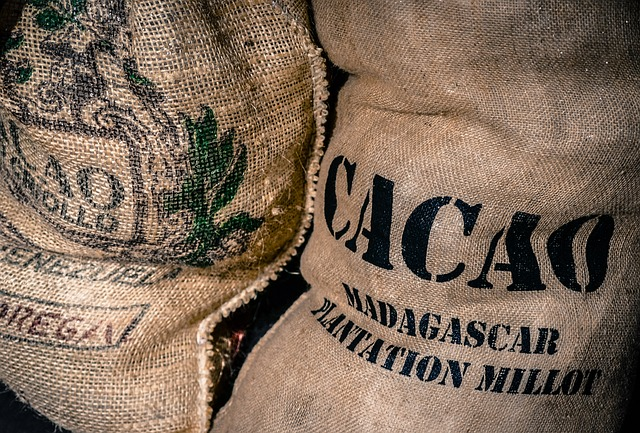

Cocoa is rich in polyphenols, which have significant health benefits, including reduced inflammation and improved cholesterol levels. However, processing cocoa into chocolate or other products can substantially decrease the polyphenol content.
Studies reveal that cocoa is rich in flavanols, which lower blood pressure by improving nitric oxide levels and blood vessel function. Cocoa containing between 30–1,218 mg of flavanols can reduce blood pressure by an average of 2 mmHg.
Cocoa can improve blood flow and reduce cholesterol. Eating up to one serving of chocolate per day may reduce your risk of heart attack, heart failure and stroke.
Flavanols in cocoa can support neuron production, brain function and improve blood flow and supply to brain tissue. They may have a role in preventing age-related brain degeneration, such as in Alzheimer's disease, but more research is needed.
Cocoa may exert some positive effects on mood and symptoms of depression by reducing stress levels and improving calmness, contentment and overall psychological well-being. However, more research is needed.
Many different sorts of products can be derived from cocoa.
The husks of cocoa pods and the pulp, or sweatings, surrounding the beans and the cocoa bean shells can be used. Some examples of these uses are:
Animal feed from cocoa husk - As pelletised dry 100% cocoa pod husk, it can be used as an animal feed. The animal feed is produced by first slicing the fresh cocoa husks into small flakes and then partially drying the flakes, followed by mincing and pelleting and drying of the pellets.
Production of soft drinks and alcohol - In the preparation of soft drinks, fresh cocoa pulp juice (sweatings) is collected, sterilised and bottled. For the production of alcoholic drinks, such as brandy, the fresh juice is boiled, cooled and fermented with yeast. After 4 days of fermentation the alcohol is distilled.
Potash from cocoa pod husk - Cocoa pod husk ash is used mainly for soft soap manufacture. It may also be used as fertiliser for cocoa, vegetables, and food crops. To prepare the ash, fresh husks are spread out in the open to dry for one to two weeks. The dried husks are then incinerated in an ashing kiln.
Jam and marmalade - Pectin for jam and marmalade is extracted from the sweatings by precipitation with alcohol, followed by distillation and recycling of the alcohol in further extractions.
Mulch - Cocoa bean shells can be used an organic mulch and soil conditioner for the garden.
Cocoa buttter - Cocoa butter is used in the manufacture of chocolate. It is also widely used in cosmetic products such as moisturising creams and soaps.
Cocoa powder - Cocoa powder can be used as an ingredient in almost any foodstuff. For example, it is used in chocolate flavoured drinks, chocolate flavoured desserts such as ice cream and mousse, chocolate spreads and sauces, and cakes and biscuits.